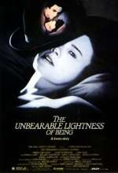

| Main | Bodies | Lenses | Accessories | M42x1 | Trivia | Contacts | About... | |
| ||||
| Good Bye Lenine. The ultimate DDR related film. And yes, a Praktica makes a short appearance. | ||||
|
 | ||||
| The Unbearable Lightness of being. This excellent movie has a Praktica camera playing an important role. | ||||
|
| ||||
| The cover of the
Japanese edition of "SPIEGELREFLEXKAMERAS AUS DRESDEN" from Richard
Hummel. This is the bible for the East German cameras aficionados.
Other Praktica related Books (Under Construction).
| ||||
|
| ||||
| Praktica cameras in Space.Taken from the advertising brochure "150 years, Cameras from Dresden". Click to enlarge. | ||||
 | ||||
| The Pentacon symbol inspired in the Ernemann building in Dresden. | ||||
|
Newspaper articles about Praktica
ORWO film production was stopped, more information in FOTO online(In German). ORWO was the "official" Praktica film. | ||||
| Praktica related
personal pages
Hendrik's Niva & MZ-Travelpage - Heindrik Merkel uses Praktica B cameras when traveling around the world, they are submitted to a very hard treatment. See "The Equipment-page" for details. |
{kind=link}